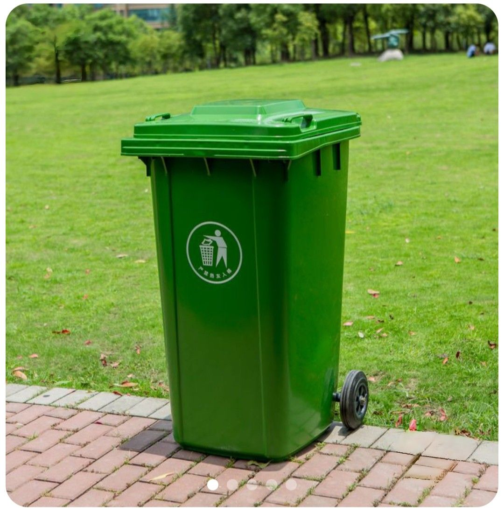
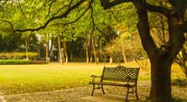
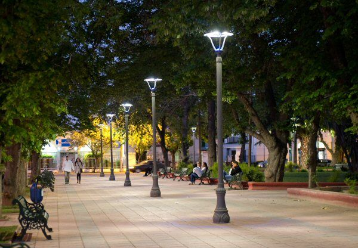
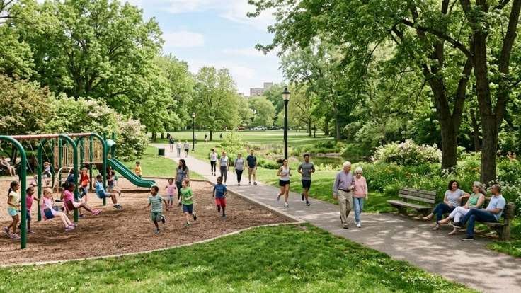

PARK 02 • FIELD ASSESSMENT
Problems & Improvements
Key issues observed in the public space and suggested improvements to make the park more accessible, comfortable and user-friendly.
FINDINGS
Areas That Need Attention
The following sample findings highlight some common issues that may affect visitors' experience of the park.

Insufficient Waste Management
Some areas of the park have limited waste disposal facilities. Overflowing bins and improperly disposed waste may lead to littering, especially during busy hours.
Improve Waste Disposal
Add more covered waste bins at strategic locations and ensure regular collection and maintenance.

Limited Seating Areas
Seating facilities are concentrated in certain parts of the park, leaving some open areas without convenient places for visitors to rest.
Add More Seating
Install additional benches near walking paths, shaded areas and frequently used sections of the park.

Uneven Lighting
Some less-used sections of the park have comparatively lower lighting than the main pathways and frequently used areas.
Improve Park Lighting
Add or reposition energy-efficient lights in darker sections while maintaining the existing lighting network.

Play Equipment Maintenance
Some children's play equipment may require regular inspection, cleaning and minor repairs to keep the area safe and usable.
Regular Maintenance
Introduce routine inspections and maintenance schedules for play equipment and recreational facilities.
ACTION PLAN
Suggested Priorities
Sample prioritisation based on the potential impact of each improvement on park visitors.
Waste Management
Increase waste-bin coverage and improve collection frequency.
Seating Facilities
Add benches in areas where visitors frequently rest.
Park Lighting
Improve lighting coverage in less-used sections of the park.
CONCLUSION
Small Improvements Can Make a Difference
Improving basic facilities, cleanliness, maintenance and accessibility can create a more comfortable and welcoming public space for different groups of visitors.